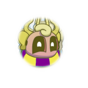

/KarlosMsm - Se inscreva no meu canal do Youtube
/KarlosMsm - Se inscreva no meu canal do Youtube /karllosportela - Me segue lá no Instagram
/karllosportela - Me segue lá no Instagram /karlosalexandre - Me acompanha lá no Facebook
/karlosalexandre - Me acompanha lá no Facebook /alexand_karlos - Me segue lá no Twitter
/alexand_karlos - Me segue lá no Twitter
Meu nome é Karlos Alexandre, trabalho com Youtube a alguns anos e já alcancei 217 Mil Inscritos no meu canal de My Singing Monsters. Estou entrando recentemente no mundo de Sistemas para Internet, estou absorvendo informações aqui e ali.. mas tudo no meu tempo e com calma.
Torço evoluir cada vez mais e poder trabalhar com isso no futuro, agradeço demais Guanabara pelas suas aulas sensacionais e que me ajudam sempre.
/KarlosMsm - Se inscreva no meu canal do Youtube/karllosportela - Me segue lá no Instagram /karlosalexandre - Me acompanha lá no Facebook /alexand_karlos - Me segue lá no Twitter